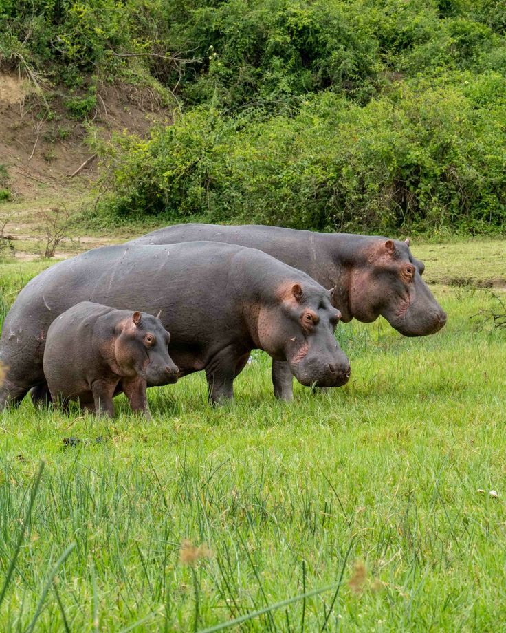

Uganda, often called the Pearl of Africa, offers breathtaking tourist attractions ranging from lush national parks and mighty waterfalls to cultural heritage sites and serene islands. Highlights include gorilla trekking in Bwindi, the thunderous Murchison Falls, and the source of the Nile in Jinja all showcasing Uganda’s unmatched blend of nature, wildlife, and culture.
Bwindi Impenetrable National Park -Famous for mountain gorilla trekking, a once-in-a-lifetime experience. -Dense rainforest with rich biodiversity. -UNESCO World Heritage Site.
2. Murchison Falls National Park - Home to the Nile River’s dramatic waterfall, where water squeezes through a narrow gorge. - Offers boat cruises, game drives, and sightings of elephants, lions, giraffes, and hippos.
3. Queen Elizabeth National Park - Known for tree-climbing lions and diverse wildlife. - Features the Kazinga Channel, ideal for boat safaris with hippos and crocodiles.
4. Jinja – Source of the Nile - Adventure capital of Uganda. - Activities: white-water rafting, kayaking, bungee jumping. - Historical significance as the start of the world’s longest river.
5. Lake Victoria and Ssese Islands - Largest lake in Africa, offering fishing, boat rides, and scenic views. - Ssese Islands provide tranquil beaches and eco-tourism experiences.
6. Mgahinga Gorilla National Park - Another gorilla trekking site, also home to golden monkeys. - Stunning volcanic landscapes.
7. Kasubi Tombs (Kampala) - A UNESCO World Heritage Site. - Sacred burial grounds of Buganda kings, showcasing Uganda’s cultural heritage.